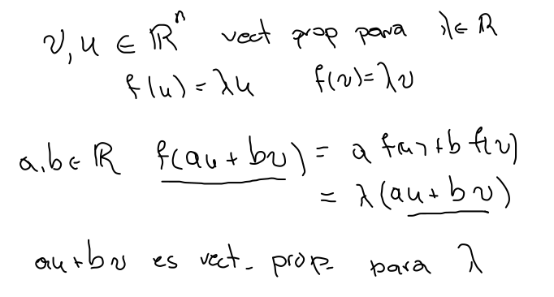
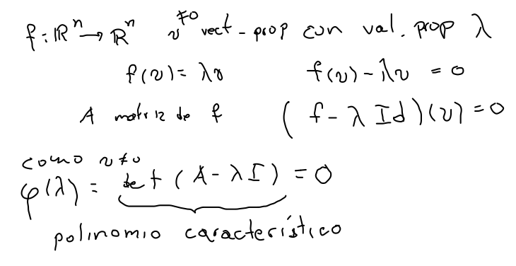
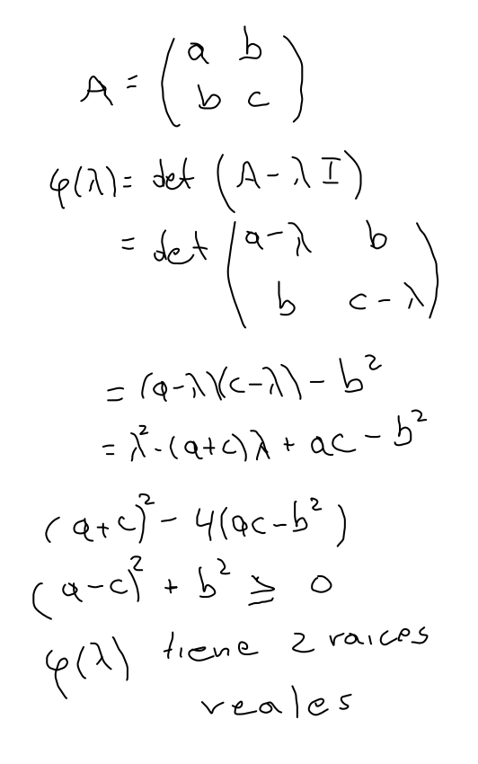
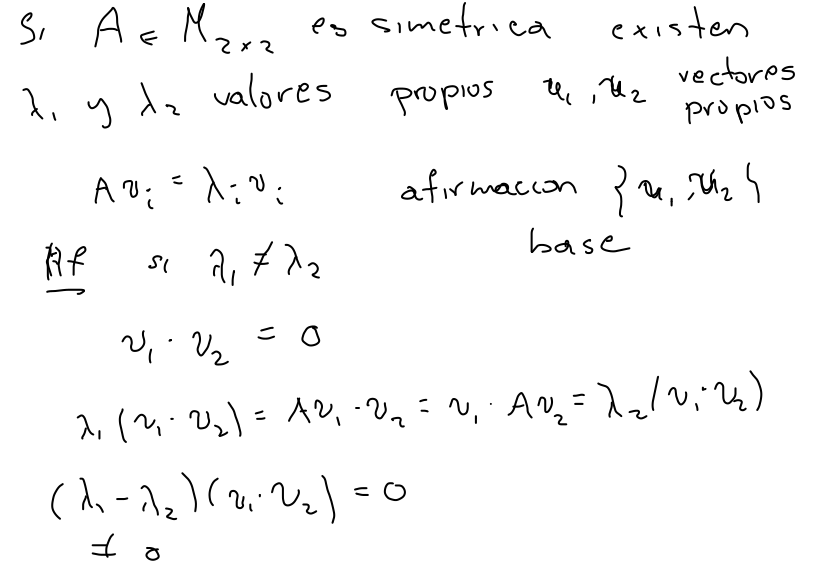
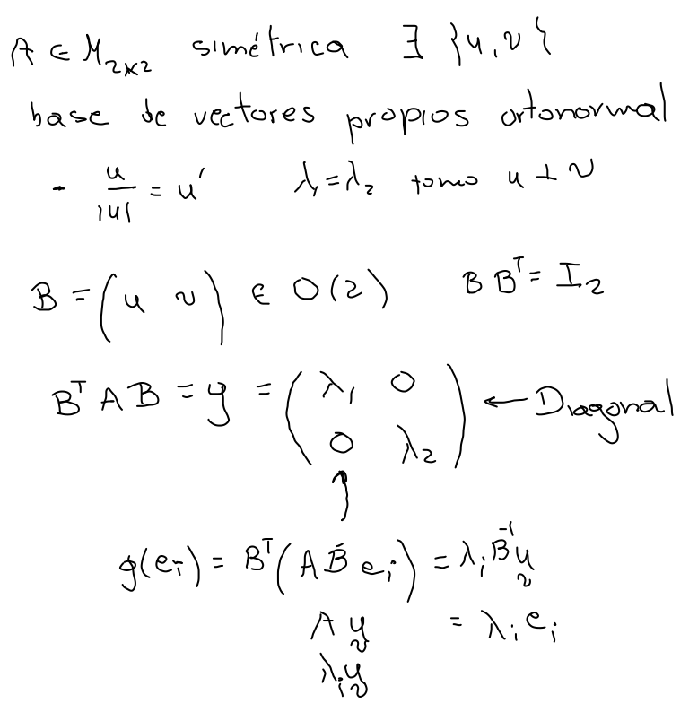

Dada una función lineal f en Rn, un subespacio lineal L es invariante, si es tal que f[L]⊂L, o equivalentemente (L=⟨v⟩) un vector propiov=0, que satisface f(v)=λv, para un valor propioλ∈R.
Afirmaciones
Dados u y v vectores propios para el mismo valor propio λ cualquier vector en ⟨{v,u}⟩∖{0}, es también vector propio para λ. 
λ es un valor propio de f, si y solo si, λ es raíz del polinomio característicodet (f−λIn). 
Si A∈M2×2 es simétrica, entonces tiene dos valores propios λ1 y λ2 en R, discriminante: (a−c)2+4b2. 
Si A∈M2×2 es simétrica, λ1=λ2, si y solo si, A=λ1Id. (Todo vector en R2∖{0} es vector propio.)
Si A∈M2×2 es simétrica, existe una base de R2 de vectores propios de A. 
Si A∈M2×2 es simétrica y λ1=λ2, entonces los valores propios correspondientes son ortogonales.
Si A∈M2×2 es simétrica entonces existe B∈O(2), tal que BTAB es diagonal. 